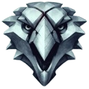

Школа Волка (ориг. Wiedźmińska Szkoła Cechu Wilka) — одна из нескольких известных ведьмачьих школ, действовавших на Континенте. Именно к этой школе принадлежит знаменитый Геральт из Ривии. Она располагается в крепости Каэр Морхен в окрестностях Каэдвена. После падения крепости и гибели большинства ведьмаков Волков возглавлял единственный из выживших наставников — Весемир. Расположенная в легендарной крепости Каэр Морхен на северо-востоке Каэдвена, Школа Волка остаётся самой известной из всех ведьмачьих школ. Ведьмаки Школы Волка прославились на весь континент своей компетентностью и профессионализмом: они убивают чудовищ и не лезут в чужие дела — насколько это возможно. Волки по натуре одиночки, но иногда работают вместе. У них нет строгого кодекса чести, но они часто принимают решения, исходя из этических соображений. Волков учат в равной степени и фехтованию, и алхимии, и применению Знаков, что позволяет им импровизировать и подстраиваться под любую ситуацию.
Известные представители: Геральт из Ривии, Весемир, Ламберт. Эскель, Цири.
Школа Кота, или Школа Кошки (ориг. Wiedźmińska szkoła cechu Kota) — одна из нескольких известных ведьмачьих школ на Континенте. Как и о большинстве других школ, о ней мало что известно. Школа была основана поколением молодых ведьмаков-отступников, которые покинули замок Моргрейг вскоре после первого раскола Цеха, прихватив с собой достаточно мутагенов и алхимического оборудования. Они обосновались в замке Стигга и попытались усовершенствовать процесс мутаций, чтобы сильнее подавить эмоции новоиспечённых ведьмаков. Вероятно, это должно было предотвратить возможный раскол новой Школы в будущем, однако изменения в Испытаниях наоборот привели к усилению эмоций, что спровоцировало конфликт с чародеями того времени, которые безуспешно попытались исправить свои ошибки, решив убить всех ведьмаков из нового нестабильного поколения. Те, однако, не стали спокойно дожидаться смерти и, ведомые Гезрасом из Лейды, сбежали, воспользовавшись крепким сном чародеев. Впоследствии, «усовершенствованные» мутации стали обыденными, и на большак вышли новые неуравновешенные Коты.
Известные представители: Бреген, Гухарт, Трейсе, Гезрас из Лейды, Гаэтан.
 Школа Грифона (ориг. Wiedźmińska szkoła cechu Gryfa) — одна из нескольких известных ведьмачьих школ на Континенте. Как и о большинстве других школ, о ней мало что известно. Замок Грифонов Каэр Серен находился на западной оконечности Драконьих гор у побережья Северного моря. Школа была основана Эрландом из Ларвика через некоторое время после раскола Ордена ведьмаков. Устав от распрей своих братьев, Эрланд ушёл из Моргрейга и захотел построить новое сообщество ведьмаков на принципах чести и благородства, а также внушить новому поколению охотников на чудовищ высокие идеалы и жёсткие моральные принципы своей профессии[1]. Также основатель Школы и его ближайшие соратники верили, что в обучении адептов следует уделять внимание не только фехтованию и мастерству убийцы, но и навыкам следопыта, развитию магических способностей, общей образованности и эрудированности учеников, которые проводили много времени в богатейшей библиотеке замка Грифонов.
Известные представители: Койон из Повисса, Эрланд из Ларвика, Ворон, Георг «Драконобоец» из Кагена, Джером Моро, Кельдар.
ЗШкола Медведя (ориг. Bear School) — одна из нескольких известных ведьмачьих школ на Континенте. Как и о большинстве других школ, о ней мало что известно. Когда-то принадлежавший краснолюдам замок Медведей, Хаэрн Кадух, расположен на заснеженных пиках гор Амелл, возможно, в восточной их части. Тем не менее, никакой конкретной информации о его местонахождении нет. Известно, однако, что суровый ландшафт этой местности использовался ведьмаками в качестве Испытания Горой: кандидаты в охотников на чудовищ должны были добраться до вершины Горгоны и принести оттуда рунный камень. Многие не справлялись с этим заданием и замерзали на склонах гор. Как и другие ведьмачьи школы, Школа Медведя больше не тренирует учеников, поскольку её крепость была разорена кметами, не желавшими соседничать с ведьмаками.
Известные представители: Арнагад, Герд, Иво из Бельхавена, Юно из Бельхавена, Ворен из Диллингена.
Школа Змеи (ориг. Viper School) — одна из нескольких известных ведьмачьих школ, действовавших на Континенте. Скрытая в расселинах горного массива Тир Тохаир крепость Гортур Гваэд приютила ведьмачью Школу Змеи, которая ставила перед собой одну-единственную цель: победу над Дикой Охотой. Ведьмаки этой школы вели себя скрытно и отстраненно, собирая сведения для борьбы с призрачными всадниками. Змеи полагали, что в таком деле цель оправдывает средства, поэтому были не слишком разборчивы в выборе контрактов — не брезговали даже теми, что требовали уничтожения людей или нелюдей. Змеи славятся своей холодностью и беспощадностью. Они хорошо организованы, дисциплинированы и сохраняют нейтралитет, не принимая ничью сторону, но могут хладнокровно убить любого, если возникнет необходимость. Змей учат осыпать противника градом молниеносных ударов и готовить такие боевые масла, чтобы любой порез мог оказаться смертельным.
Известные представители: Ивар Злобоглаз, Лето из Гулеты, Безымянный ведьмак, Зеррит, Эган.
Школа Мантикоры (ориг. School of the Manticore), или Алькатил (с зерриканского языка — Охотники) — одна из нескольких известных ведьмачьих школ, действовавших на Континенте. Их штаб-квартира Бехельт Нар располагалась на Дальнем Востоке, на окраинах пустыни Корат. Ведьмаки этой школы редко решаются переправляться на другую сторону Континента, отчего и остаются в основном загадкой для нордлингов. Большинство северян слыхом не слыхивало о ведьмачьей Школе Мантикоры, которая находится за далекой пустыней Корат. Её представители редко появляются в северной части континента, где к ним относятся крайне недоверчиво. Мантикоры приспособлены к обычаям, флоре и фауне далёких земель, поэтому их поведение и боевой стиль для северян непредсказуемы и чрезвычайно опасны. Мантикоры привыкли иметь дело с ядовитыми тварями в крепчайших панцирях, поэтому умеют находить и поражать уязвимые точки. Они также развили высокую устойчивость к токсинам — как естественного происхождения, так и алхимического.
Известные представители: Иван, Мертен.